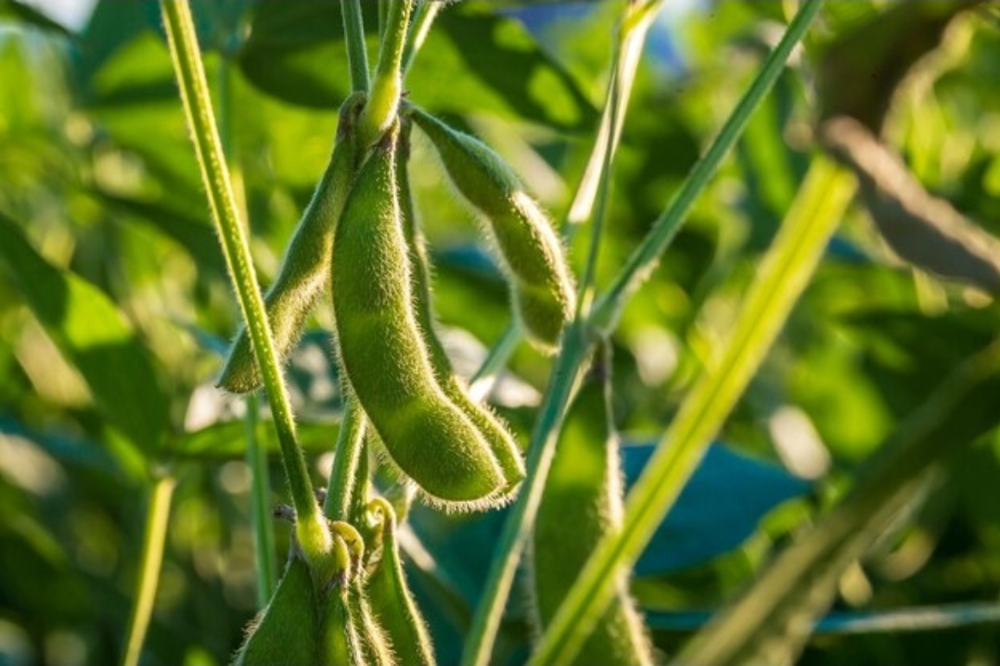
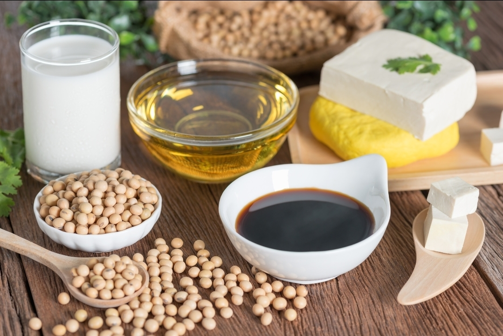
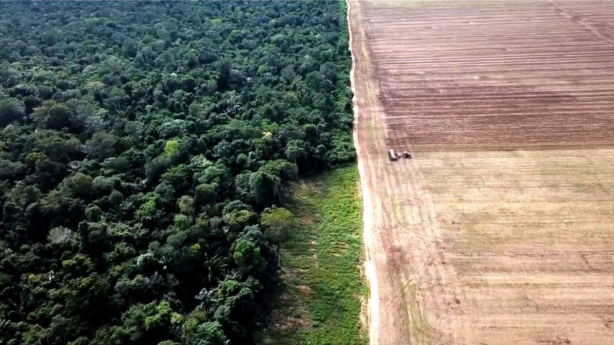

¿Qué es la soja y cuándo se cultiva en Argentina?
La soja es una planta leguminosa y oleaginosa. Produce semillas comestibles que crecen, se desarrollan y maduran contenidas dentro de una vaina que las protege, la misma vaina que le da a la planta su aspecto característico durante la cosecha.
En Argentina, la siembra se realiza durante los meses de noviembre, diciembre y enero, coincidiendo con la primavera y el inicio del verano, ya que el cultivo necesita suelos cálidos y buena disponibilidad de agua para germinar. La cosecha, en cambio, llega meses después, entre marzo y mayo, cuando las vainas ya están completamente maduras.

Propiedades y características
La planta de soja combina un altísimo valor nutricional con una notable capacidad de adaptación, lo que explica su enorme expansión productiva en distintas regiones del mundo. Estas cualidades la convirtieron en uno de los cultivos más rentables y versátiles de la agricultura moderna, tanto para el consumo humano como para la industria.
Productos que contienen soja
A partir de la soja se elabora una enorme variedad de productos, que van desde la alimentación humana hasta la industria pesada. Esta versatilidad es posible porque de la semilla se pueden aprovechar tanto el aceite como la proteína y la fibra, lo que la convierte en materia prima de sectores muy distintos entre sí.
- Aceite y salsa de soja
- Harina de soja
- Milanesas y pastas a base de soja
- Porotos y brotes de soja
- Bebidas, jugos, cerveza y leche de soja
- Medicamentos y antibióticos
- Materiales de limpieza y cosméticos
- Pinturas, plásticos y adhesivos
- Insecticidas, textiles y cartón
- Harina de soja como insumo principal
- Alimento balanceado para mascotas
- Alimento para peces y aves
- Alimento para ganado vacuno y porcino

El factor que impulsó su desarrollo mundial
El factor determinante fue la crisis de la anchoveta en Perú, a comienzos de la década de 1970, cuando la sobrepesca y un fenómeno de El Niño particularmente intenso hicieron colapsar los bancos de este pez frente a las costas peruanas.
Hasta ese momento, la harina de anchoveta era el insumo clave para la alimentación proteica de aves y cerdos a nivel mundial. Al colapsar la pesca de este pez, se generó un enorme vacío de demanda en el mercado internacional que la industria necesitaba cubrir con urgencia. La soja emergió como el sustituto proteico ideal para la nutrición animal, gracias a su alto contenido de proteínas y a la facilidad para cultivarla a gran escala, lo que impulsó su producción masiva y comercio global en las décadas siguientes.
Las dos caras de la soja
Se dice que el negocio de la soja genera "luces y sombras": una enorme fuente de riqueza que convive con graves consecuencias sociales y ambientales, dos caras de una misma actividad que conviene analizar por separado para entenderla completa.
Constituye una enorme fuente de ingresos y divisas para los países del Mercosur, como Argentina y Brasil, posicionándose como la exportación agropecuaria que más incide en el PBI del país y generando trabajo en toda la cadena de valor, desde el campo hasta los puertos de exportación.
Trae consigo graves secuelas sociales, ecológicas y sanitarias, derivadas de las dinámicas del modelo sojero y la expansión del monocultivo, que se detallan a continuación en cada uno de sus principales efectos negativos.
Consecuencias negativas
- Desplazamiento campesino e hipotecas: la concentración de tierras por grandes empresas y los mecanismos de endeudamiento forzaron a pequeños productores a perder o vender sus campos.
- Caída del empleo rural: al requerir muy poca mano de obra (2 a 5 trabajadores cada 1.000–2.000 hectáreas), el empleo agrícola en Argentina cayó de 1.000.000 a 500.000 personas.
- Deforestación y desmonte: pérdida masiva de bosques nativos, como el Gran Chaco o el Cerrado brasileño, para ganar superficie de siembra.
- Monocultivo y degradación de suelos: reemplaza la diversidad agrícola y la ganadería, afectando la biodiversidad y desgastando los nutrientes de la tierra.
- Agroquímicos y soja transgénica: más del 95% de la soja en Argentina es transgénica y su cultivo exige el uso masivo de herbicidas tóxicos, vinculados a problemas de salud en poblaciones rurales.
- Dependencia económica: depender de la exportación de un solo producto expone al país a crisis si caen los precios internacionales o hay malas cosechas.
